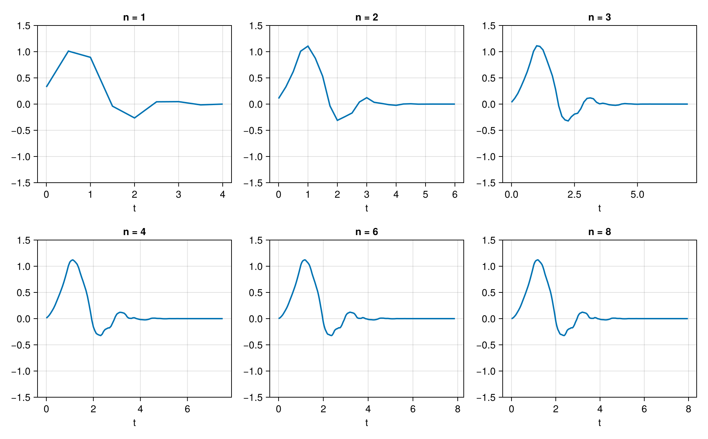
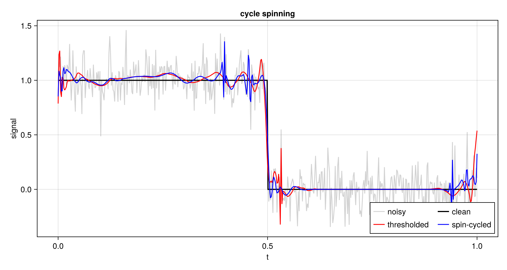
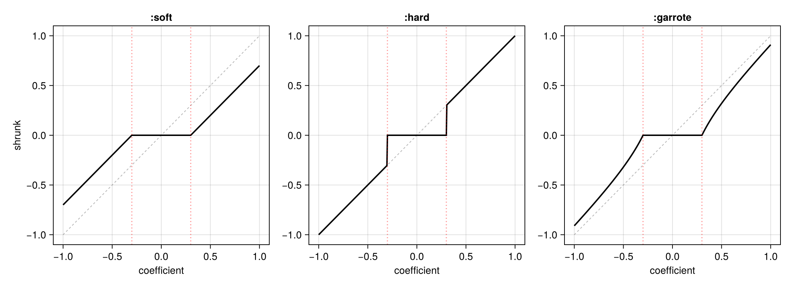
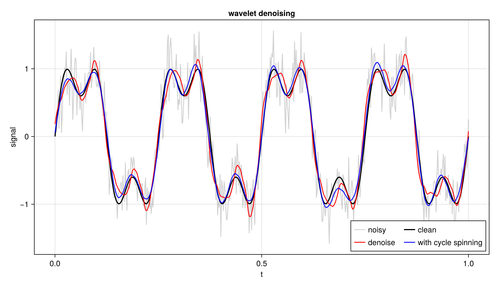
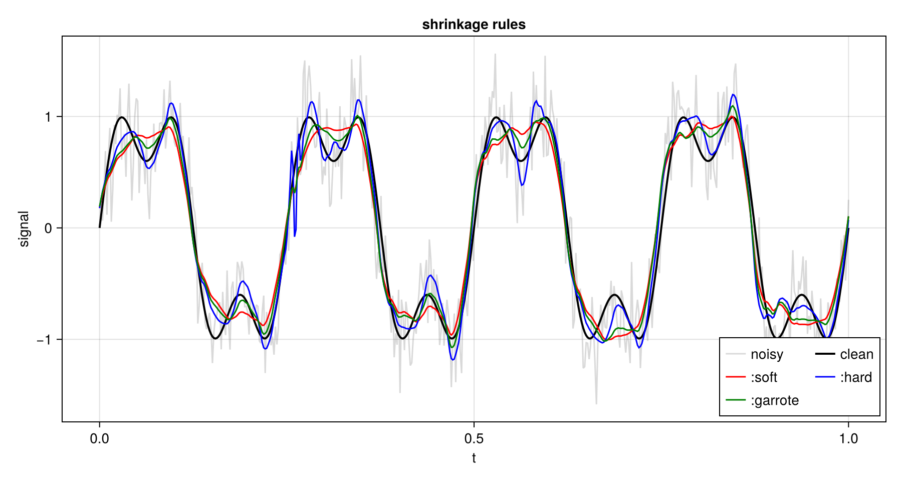
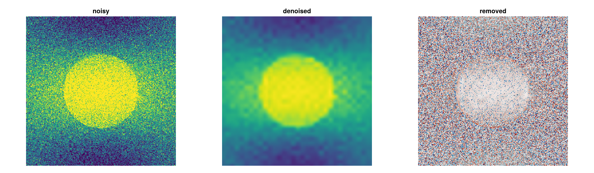

Algorithms
The cascade algorithm
cascade calculates an iterative approximation to the equivalent continuous-time wavelet. Each step doubles the resolution. By default, 8 iterations are applied.
using NDWaveletTransforms
φ, ψ = cascade(WT_D4, 8)
t = (0:length(φ) - 1) ./ 2^8 # samples at k / 2^8
Cycle-spinning
Decimating wavelet transforms are phase-sensitive; this can introduce pseudo-Gibbs phenomenon and incomplete sparse representation. One common approach to this problem is cycle-spinning: repeating a particular wavelet-domain operation multiple times to the same signal at different shifts. This suppresses Gibbs phenomenon and helps to expose additional sparse structure.
This cyclespinning loop is executed n times on x passing the callback function f to cyclespinning!(f, x, n = 4). The callback is responsible for transforming the signal (as there are multiple possible transforms). The shifts are the primes from prime(start + 1) upward.
function denoise!(x)
dwt!(x, WT_D4, 4)
x[abs.(x) .< 0.1 * maximum(abs.(x))] .= 0
idwt!(x, WT_D4, 4)
return x
end
plain = denoise!(copy(noisy))
spun = copy(noisy)
cyclespinning!(denoise!, spun, 8)
The thresholded signal overshoots at the step and at the boundary, where the periodic wrap-around lives. The spin-cycled result follows the step more closely and rings less.
Denoising
denoise is a convenience function applying shrinkage denoising to signals. This is done by
- Forward-transforming the signal,
- Applying thresholding,
- Inverse-transforming.
Cycle-spinning can optionally be applied.
Shrinking coefficients
threshold! applies one of three rules given threshold λ:
:softsubtractsλfrom the magnitude. The rule is continuous, which keeps the estimate smooth, but it biases every coefficient toward zero.:hardkeeps a coefficient or zeroes it. It is unbiased for large coefficients and leaves ringing at sharp features.:garrotesits between the two,x (1 - λ^2 / |x|^2).

Choosing the threshold
The default rule is :universal, λ = σ sqrt(2 log n), with σ estimated from the finest detail band by noisiness, which is the median absolute deviation divided by 0.6745. :sure minimises Stein's unbiased risk estimate instead. Only detail coefficients are thresholded.
cycles > 0 averages the estimate over circular shifts with cyclespinning!.
s_denoised = denoise(s, WT_D4, 4)
s_smooth = denoise(s, WT_D4, 4; cycles = 8)
The rules trade bias against ringing:

Denoising 2-D Signals
Denoising works on images. The noise estimate uses every finest-scale detail subband. The threshold applies to all of them.
img_denoised = denoise(noisy_img, WT_D4, 3)
compress is the same construction with a fixed coefficient budget rather than a threshold.